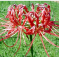
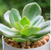
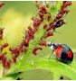

首页>养花知识
养花知识主题站


发表评论
发送(S)

我的关注主题站

奇花异草
掰一掰那些你见过的奇花异草吧！感受大千世界的多姿多彩。
掰一掰那些你见过的奇花异草吧！感受大千世界的多姿多彩。

身边一平米
身边一平米，电脑桌尽头，台灯90度的角落，转身的偶遇。
身边一平米，电脑桌尽头，台灯90度的角落，转身的偶遇。
花海旅途
人在旅途，花在心中，体验花海人生中，不经意间千般百种！
人在旅途，花在心中，体验花海人生中，不经意间千般百种！

多肉博物馆
阳光洒在肉肉上的时候，闪闪发光，因为它们笑了。
阳光洒在肉肉上的时候，闪闪发光，因为它们笑了。

幸运花
找到属于自己的幸运花，让幸运之神陪伴着你一路成长。
找到属于自己的幸运花，让幸运之神陪伴着你一路成长。
花与生活
鲜花，是美的象征，是健康向上的标志。
鲜花，是美的象征，是健康向上的标志。